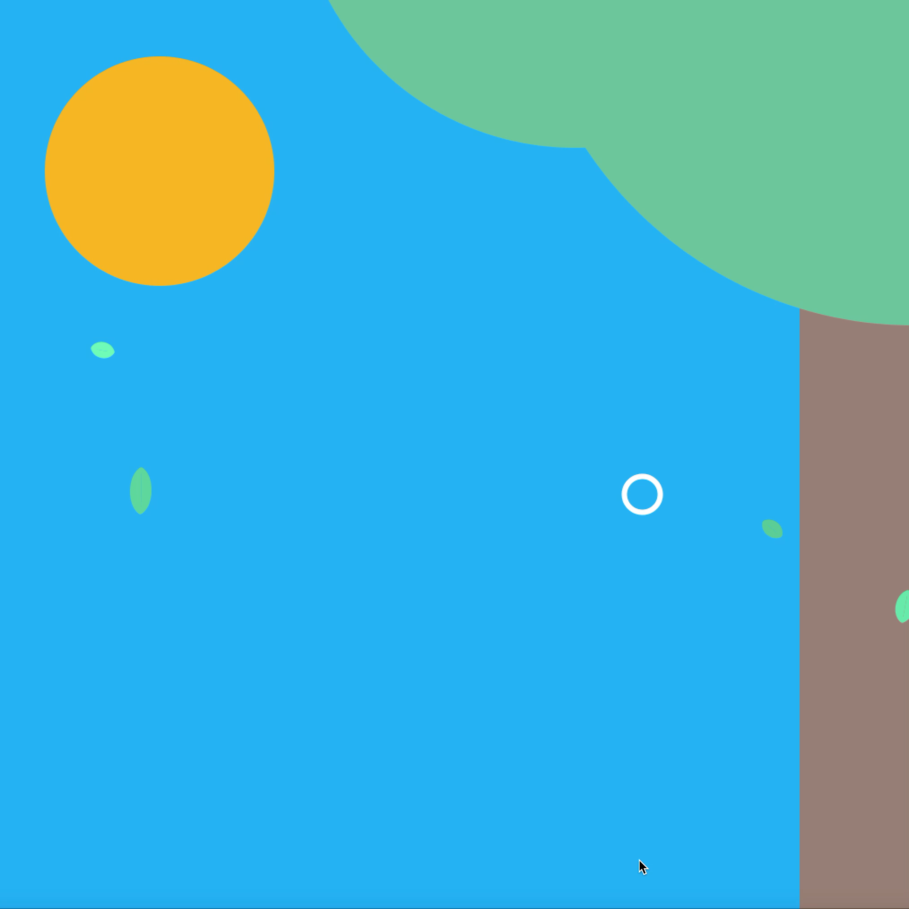
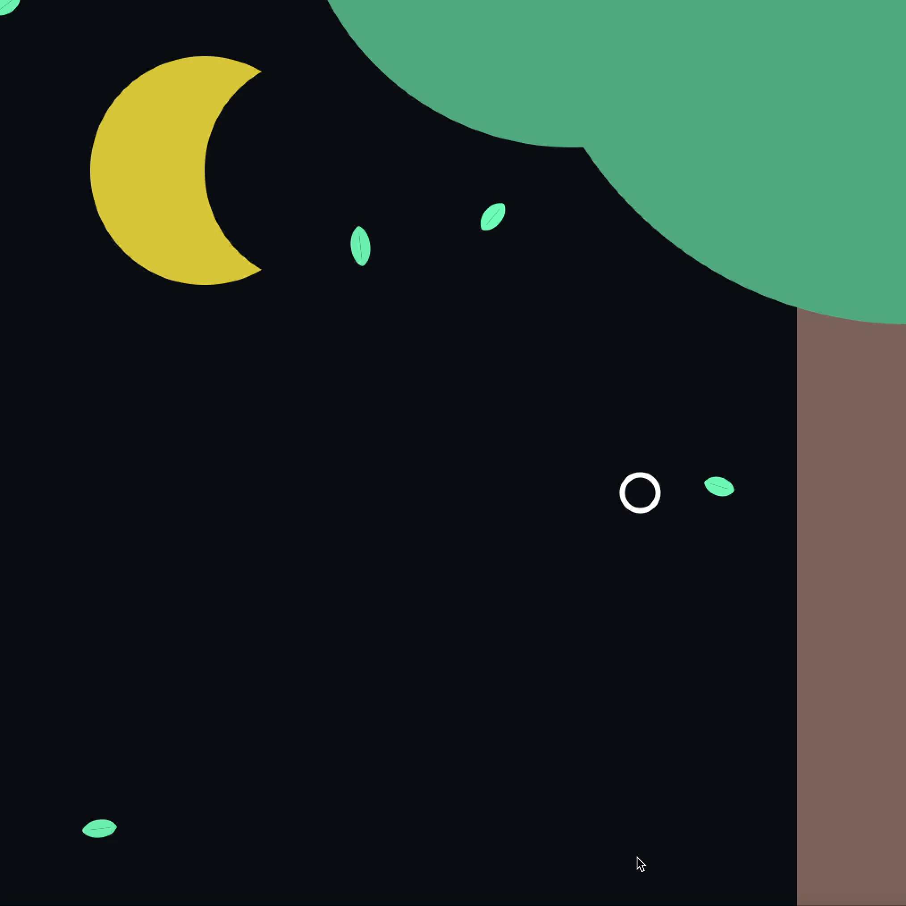
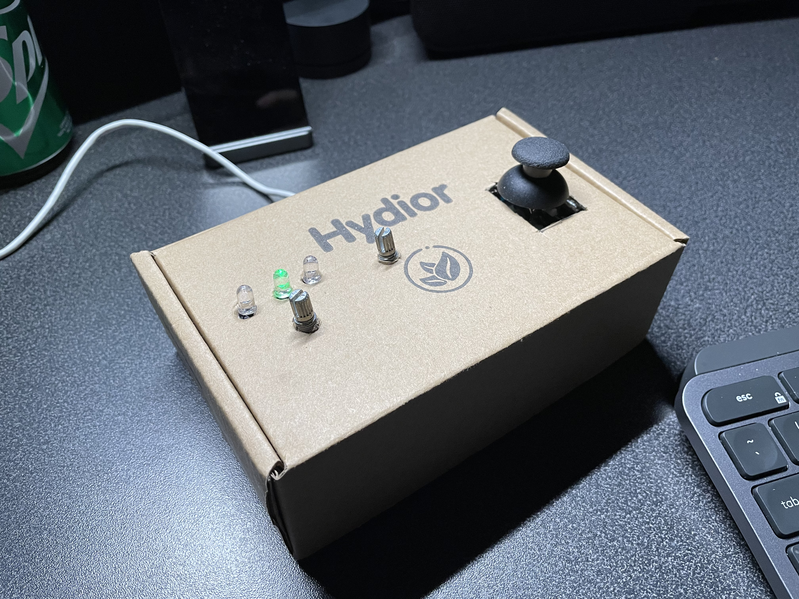

In this assignment, we are required to further develop our previous project with the utilization of components like a potentiometer, buttons, etc., to replace our previous simple mouse / keyboard input. Based on the bubble / park natural system, I started pushing the environmental control further and allowing the user to control more elements in the scene. At the same time, still retain the previous easy and intuitive input option for the users.
Day Time Environment:
Night Time Environment:
I further introduced more environmental factors into the scene on the software side: a basic graphical representation of the time (sun and moon) and surroundings (tree), while adding more controls to these environments. The user can now change the day time in the scene, and the general lighting of the scene and the sun / moon will also be changed with the user's interaction. The previously existed elements, including bubbles and wind, are even more visually intriguing. The bubble now comes with a more realistic gradient in color, and the wind will change the environment's dusty level based on its strength.

The other most important part of this project is the hardware side. I created a controller using Particle Argon board, breadboard, one controller knob, two potentiometers, and three LEDs to create a simple controller that fits my scene. The controller knob is a perfect replacement for two sliders and one button while providing a more enjoyable user experience considering how familiar such a component is to users. This knob can control the movement "bubble pointer" in the scene and command it to shoot out bubbles. The two potentiometers control the environment like the wind and time, while the LEDs (two red and one green) can create more precise feedback on whether the wind level is right.
The Controller:

For this system's future, I would like to develop a more delicate force system in the scene, which increases the dynamic movement of the different elements. I would also consider adding more self-evolving environmental, hidden effectors that can make the whole system more exciting and autonomous.